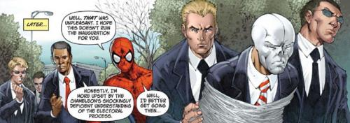

Дмитрий Смердяков (Dmitri Smerdyakov) родился в России. Он сводный брат Сергея Кравинова (Sergei Kravinoff). Отец у них общий, а вот матерью Дмитрия была Соня Смердякова – служанка в доме Кравинова. За годы проживания в доме своего отца Смердяков научился ненавидеть себя. Отцу не нравилось его лицо, мать постоянно унижала Дмитрия, а остальные люди относились к нему с призрением, поскольку он был незаконнорожденным. Единственный, кто относился к нему нормально, был сводный брат Смердякова Сергей, хотя и он зачастую жестоко обращался с ним. Чтобы произвести на брата впечатление, Дмитрий копировал поведение своих соседей. Смердяков был так глубоко травмирован, что поверил, будто бы он и Сергей - лучшие друзья.
Его способность копировать поведение других людей в скором времени привлекла внимание Коммунистических стран, которые завербовали и обучили Смердякова в качестве шпиона. Дмитрий полагался на свои театральные навыки, специальный костюм, который менял цвет, форму и особую косметику, скрывающую его личность. Смердяков также носил необычный жилет, в котором хранились материалы, необходимые для быстрой маскировки. Из-за того что в детстве отец издевался над Дмитрием по поводу его лица, Смердяков практически всегда носил маску и редко показывал свое истинное лицо.
Человек-Паук - идеальная марионетка для меня! Я украду вторую часть планов противоракетной обороны и заставлю его убрать полицию с моего пути!
- Хамелеон
/chameleon1.gif)
Вскоре после первого публичного появления Человека-Паука (Spider-man), Хамелеон украл часть планов противоракетной обороны. Из средств массовой информации он узнал, что Паркер посетил Фантастическую четверку (Fantastic four). По городу поползли слухи о том, что скоро в команде Рида Ричардса (Reed Richards) появится новый член. Дмитрий предположил, что Паук решил присоединится к Фантастической четверки для того, чтобы получать устойчивый доход. Тогда Смердяков задумал выкрасть оставшуюся часть планов при помощи Спайди. Однако Человек-Паук раскусил Хамелеона и выставил его как настоящего преступника, тем самым очистив свое имя. Это событие положило начало вражде Смердякова и Паркера.
После своей неудачи Хамелеон был выслан из США, но через несколько месяцев вернулся. Рассматривая Паука как главную угрозу своим планам, Дмитрий объединяется со своим братом Сергеем. Но Человеку-Пауку удается победить их. Впоследствии Кравен станет ярым противником Паркера.
Даже зная о том, что Кравен был эгоистичен, Хамелеон по-прежнему хотел, чтобы Сергей относился к нему как к брату. Для этого Дмитрий решил доказать Кравену, что может быть опаснее, чем он. Смердяков пытался победить Железного Человека (Iron man). Замаскировавшись под Капитана Америку (Captain America), Дмитрий пытался убедить Тони Старка (Tony Stark) в том, что именно он настоящий Капитан Америка. А тот Капитан Америка, что находится в особняке Мстителей, был Хамелеоном. Железный Человек отправился в особняк Мстителей и вступил в сражение со Стивом Роджерсом (Steven Rogers). Дуэль длилась до тех пор, пока Гигантский Человек (Giant-Man) не захватил настоящего Хамелеона и не раскрыл его обман.
Смердяков довольно часто работал на криминальных боссов Нью-Йорка ради собственной выгоды. Среди них были неофашистская организация Гидра (HYDRA), Лидер (Leader), облученный гамма-лучами супергений. Он также работал с Хаммерхэдом (Hammerhead) во время войны банд между Кингпином (Kingpin) и Братьями Лобо (Lobo Brothers). Хамелеон сталкивался с Мстителями (Avengers), Сорвиголовой (Daredevil) и Халком (Hulk).
Чтобы расширить свои навыки перевоплощения, Хамелеон начинает использовать особый голографический пояс и принимает экспериментальную формулу, которая делает его тело полностью совместимым с устройством. Используя свои новые способности, Смердяков попытался установить истинную личность Человека-Паука. Он также пробовал спасти Сергея Кравена, когда тот пытался совершить самоубийство, но не сумел.
В это время Зеленый Гоблин (Гарри Осборн) убедил Хамелеона создать двух роботов, которые должны были исполнить роли погибших родителей Паркера. Целью Хамелеона было заставить Питера раскрыть истинную личность Человека-Паука, поскольку именно Паркер делал снимки Спайди и должен был знать, кто такой Паук. Хотя Гарри знал, кем был Человек-Паук на самом деле, его целью было подавить Питера морально и психологически. Раскусив обман, Паркер был в не себя от ярости. Когда Хамелеон столкнулся с озлобленным Человеком-Пауком, на него нахлынули воспоминания о несчастном детстве. Смердяков упал в неподвижное состояние и продолжал повторять одни и те же слова: "Я - ничто…"
Хамелеона поместили в Институт Равенкрофта (Ravencroft Institute), но он сбежал, приняв облик его доктора Эшли Кафка (Ashley Kafka). Смердяков похитил Паука и обнаружил, что Спайди и Паркер один и тот же человек. Теперь Хамелеон понял, почему Паук так разозлился, когда узнал правду о родителях-роботах. Дмитрий поместил Паркера в тюрьму и убедил Питера в том, что он на самом деле писатель по имени Герберт Смит (Herbert Smith), а вся его жизнь в качестве Человека-Паука - лишь игра воображения. Хамелеон в это время замаскировался под Паркера и жил жизнью Питера, пока его не раскусила Мэри Джейн (Mary Jane). Бежав после провала, Хамелеон оказался ранен своим племянником – Алешей Кравиновым (Alyosha Kravinoff) (новым Кравеном Охотником).
Не кажется ли вам несправедливым, что, любя одного человека, в один прекрасный день вы можете его потерять... Я думаю, что это была бы величайшая ирония жизни, если бы история повторилась вновь…
- Хамелеон
Желая загладить свою вину за преступления, совершенные в прошлом, Хамелеон назначает Паркеру встречу у моста, где погибла первая любовь Питера, Гвен Стейси (Gwen Stacy). Там Дмитрий расскажет Паркеру о своем одиночестве и признается в том, что после смерти брата Питер стал самым близким для него человеком. Когда Паркер рассмеялся от удивления, Дмитрий попытался совершить самоубийство, прыгнув с моста.
Но Хамелеон выжил и вновь попал в психиатрическую больницу. Смерть Сергея настолько сильно поразила Смердякова, что Дмитрий решил, будто бы он - Кравен Охотник. Когда сознание вновь вернулось к Хамелеону, он вступил в Зловещую Дюжину Нормана Осборна (Norman Osborn's Sinister Twelve). Позже Хамелеон вступит в группу Уничтожителей (Exterminators), в составе которой Смердяков попытается убить тетю Питера, Мэй Паркер (May Parker).
После событий Еще Одного Дня (Brand New Day) все воспоминания Хамелеона о Человеке-Пауке были стерты. Позже Смердякова наймет Полковник Масаб (Colonel Masab), возглавлявший движение Талибов в Пакистане. Миссия Хамелеона состояла в том, чтобы установить бомбу в Нью-Йорке. Для осуществления этой задачи Смердяков принимает облик Паркера. Когда Дмитрий делает маску Питера, он все время повторяет: "Паркер. Питер Паркер. Почему это имя кажется мне таким знакомым? Очень много имен. Очень много лиц. И я был ими всеми". Осуществить задуманное Хамелеону помешает Человек-Паук. После этого Смердяков станет работать с Сашей Кравинов (Sasha Kravinoff), и вместе они решат воскресить Сергея. Для этого им нужно было принести в жертву Человека-Паука. Когда ритуал был завершен, Сергей воскрес, но страдал от вспышек гнева и не мог себя контролировать. Смердяков понял, что что-то пошло не так. Он кинулся исследовать труп Паука, но обнаружил лишь тело Каина (Kaine). Тогда Хамелеон осознал, что попал в ловушку Спайди.
Через некоторое время Хамелеон попытается взять облик нового президента США Барака Обамы, но будет остановлен Человеком-Пауком.

Хамелеон обладает обыкновенной силой, ростом и телосложением для человека своего возраста, регулярно занимающегося спортивными тренировками.
Имитация: Хамелеон наделен способностью принимать облик любого человека: его пигментацию, волосы и форму тела. Чтобы воспользоваться этой силой, ему необходим Компьютерный Пояс. Если он потеряет пояс, то вернется обратно к своему нормальному, бледно-белому облику.
Смердяков - мастер маскировки, шпионажа, эксперт по взрывчатым веществам и отличный стрелок. Он также великолепный актер.
Маски: Первоначально Хамелеон использовал маски, которые были копиями лиц живых людей. Дмитрий изготавливал их самостоятельно. При распылении специального газа, маска разрушалась, и Смердяков возвращался к своему нормальному лицу.
Одежда, меняющая цвет: Оригинальная одежда Хамелеона была сделана из особой ткани, которая меняла свой цвет при распылении специального газа.
Запоминающая Ткань: Одежда Хамелеона сделана из специальной ткани, которая способна менять свой цвет и форму. Изменения контролируются компьютерным поясом.
Компьютерный Пояс: Он несет в себе 3 функции. Первая заключается в сканировании внешности человека. Вторая функция пояса - хранение этого изображения в банке данных. Пояс способен запоминать несколько сотен изображений. Третья функция - изменение внешности Хамелеона на любую, хранящуюся в базе данных пояса. При активации, устройство посылает 2 электрических сигнала: первый изменяет внешность Дмитрия, а второй - его одежду.
Дротики со снотворным: Хамелеон носит маленький пневматический пистолет, стреляющий дротиками со снотворный.
Усыпляющий газ: Смердяков всегда имеет под рукой маленький аэрозоль со снотворным, способным усыпить жертву на 1-10 часов.
Дымовая бомба: при использовании, создает дымовую завесу
Хамелеон часто использует угнанные вертолеты.
Наверх